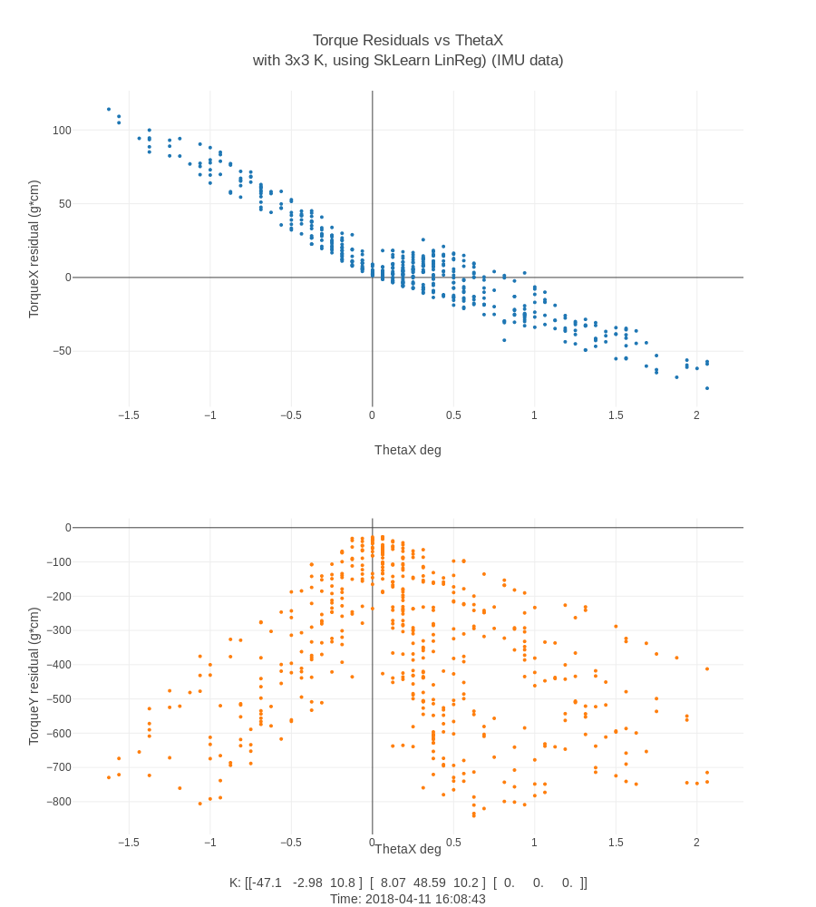

Plotting Residuals (now with ~492 datapoints)
into account 3 datapoints per force.
Update: Added visual K confirmation (linear fit vs ridge), noted issue with Ridge & fit_intercept
For this week, I generated graphs of the residuals of the torque estimate using the simple linear model: torque = k * theta + constant.
Sanity Check
{kind=link}
Observe the “N” and “R” columns, which are the torque Y, and estimated torque
Y, respectively. Furthermore we have the residual itself in column “V”. The
estimates mostly pass the sanity check (seem reasonable).
Below I show K as calculated by numpy.lstsq vs sklearn.linreg vs `sklearn., as calculated across all 492 datapoints. We see that pure linear regression has the least error.
{kind=link}
Scikit Ridge regression library provides opportunity to turn off y-intercept term of model. Naturally this resulted in higher error (not shown). What’s interesting to me is that Ridge regression performs so poorly, I was under the impression that it was fairly similar to linear regression. TODO: investigate this further.
I had this brief moment of confusion where I thought Ridge seemed to fit better than linear regression, below you may see the difference between fitting with and without y-intercept.
(NOTE: Following two graphs are using”fake data”, aka data I had not fixed yet)
Here is fit with intercept
{kind=link}
And with no intercept (aka line must pass through zero)
{kind=link}
The error rate with simple linear regression is not bad, a RMSE of 17.7 (g cm), which with average x position ~3.5 cm, is around 5 g of force estimate error .
Questions
Difference between numpy and sklearn K estimates
Questions: As seen in above image, Numpy’s least squares answer for K – was very different from sklearns. sklearn’s K looked more reasonable (didn’t have tiny values) – is this just due to normalization? Sklearn’s K passed the sanity check, but I did not check numpy’s K.
What to plot
Do we really need only the torque residuals? Or should we also look at the theta or force or position residuals? I can’t think of a reason we would need the latter.
Plots
As we ultimately wish to estimate torque, I calculated the torque residuals (for X and Y, aka roll and pitch respectively). I then plotted them against: $\hat{\tau}_x, \hat{\tau}_y, F_z, \theta_x, \theta_y, \theta_z, r_x, r_y$.
Torque Estimated
I think that only (epsX vs torX) and (epsY vs torY) should be meaningful, but here are all four combinations (made my code easier).
- TorqueX, Estimated

- TorqueY, Estimated

Force
{kind=link}
Thetas
- ThetaX
 - ThetaY
- ThetaZ
{kind=link}
{kind=link}
{kind=link}
Positions
{kind=link}
{kind=link}
Math
See previous post.
Thought Process
If we take our stiffness matrix estimate, $\hat{K}$, and plug it back into our $\tau = K \theta$ equation, we will get a $\hat{\tau}$ as predicted by our model. We can then compare $\hat{\tau}$ to our measured $\tau$. We can then also calculate our torque estimate residuals.
I had a lot of confusion about what exactly I should calculate for the residuals. Did I need to calculate estimates of the force, and then residuals for that, and the estimates of the deflection using the measured torque and the estimated K, and then plot them against everything? This would result in an intensely combinatorial data set.
Eventually I settled on, the torque is ultimately what we want to be able to estimate, as based. We assume the deflections as measured by the IMU can give give us the torque. Assuming as well that we get an accurate reading of the force contact location, we can then derive the force applied ( $F = \tau /\ r$ ). Thus, we only need the residuals for the torque estimates for x, y (assuming torque z is always zero).
Additionally, I was sad to learn that the K bottom row estimate would always be zero. I was hoping that, since I had datapoints with nonzero $\theta$ x,y,z, then the least squares solution might find something interesting, e.g. $0 = -0.2x + 1.5y -.1z$. However, it appears that our assumption that force is applied at $r_z = 0$ always, means that we cannot solve for anything meaningful for the K matrix.
Interpretation
[TODO] I think I need to take a day and come back to look at these graphs.
Todo
Actually interpret the graphs… and reduce the rmse.
(handtune a basis function to play around, then maybe NN to learn the correct basis function?)
Project Timeline tracking
TODO
Code Reference
myX = BigTheta#theta_1Dreshape(-1,1)
myy = torq
regr= Ridge(fit_intercept=True, alpha=1.0, random_state=0, normalize=True)
'''
fit_intercept : boolean
Whether to calculate the intercept for this model. If set to false, no intercept will be used in calculations (e.g. data is expected to be already centered).
'''
regr2 = linear_model.LinearRegression()
regr.fit(myX, myy)
regr2.fit(myX, myy)
K = regr.coef_
K2 = regr2.coef_
yPred= regr.predict(myX)
yPred2= regr2.predict(myX)
print('\n======================')
matK = np.linalg.lstsq(BigTorque, BigTheta, rcond=None)[0]
print(matK.shape)
print('Numpy linalg.lstsq() K coefficients:\n', matK)
print('LinReg K Coefficients: \n', K2)
print('Ridge K Coefficients: \n', K)
print('\n======================')
torq_est = np.dot(K2, theta.T).T #n.3
resid = torq - yPred
mse = (resid ** 2).mean(axis=0)
print('resid shape', resid.shape)
print('RMSE Per Torque Dim', np.sqrt(mse))
#print('Variance score (ideal 1): %.2f' % r2_score(thetaY))
print('\n======= SkLearn Metrics====')
print('\n---- Using LinReg K dot theta. This has worse error as we have no intercept term. ===')
print('Mean Absolute Error: %0.02f' % metrics.mean_absolute_error(torq, torq_est))
print('Mean Squared Error: %0.02f' % metrics.mean_squared_error(torq, torq_est) )
print('Root Mean Squared Error %0.02f' % np.sqrt(metrics.mean_squared_error(torq, torq_est)))
print('\n---- Using sklearn LinearRegression.pred(theta). ========')
print('Mean Absolute Error: %0.02f:' % metrics.mean_absolute_error(torq, yPred2)),
print('Mean Squared Error: %0.02f' % metrics.mean_squared_error(torq, yPred2) )
print('Root Mean Squared Error: %0.02f' % np.sqrt(metrics.mean_squared_error(torq, yPred2)))
print('\n---- Using sklearn Ridge.pred(theta). ========')
print('Mean Absolute Error: %0.02f' % metrics.mean_absolute_error(torq, yPred))
print('Mean Squared Error: %0.02f' % metrics.mean_squared_error(torq, yPred) )
print('Root Mean Squared Error: %0.02f' % np.sqrt(metrics.mean_squared_error(torq, yPred)))
print('\n --- LinRegr has the best fit ----')
print('\nNote: torques about y axis: Min', myy.min(), '; Max', myy.max(), 'grams * cm')
print('\n======================')